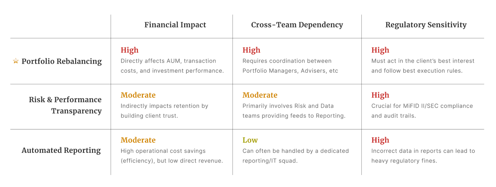
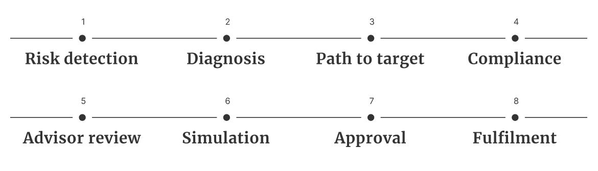
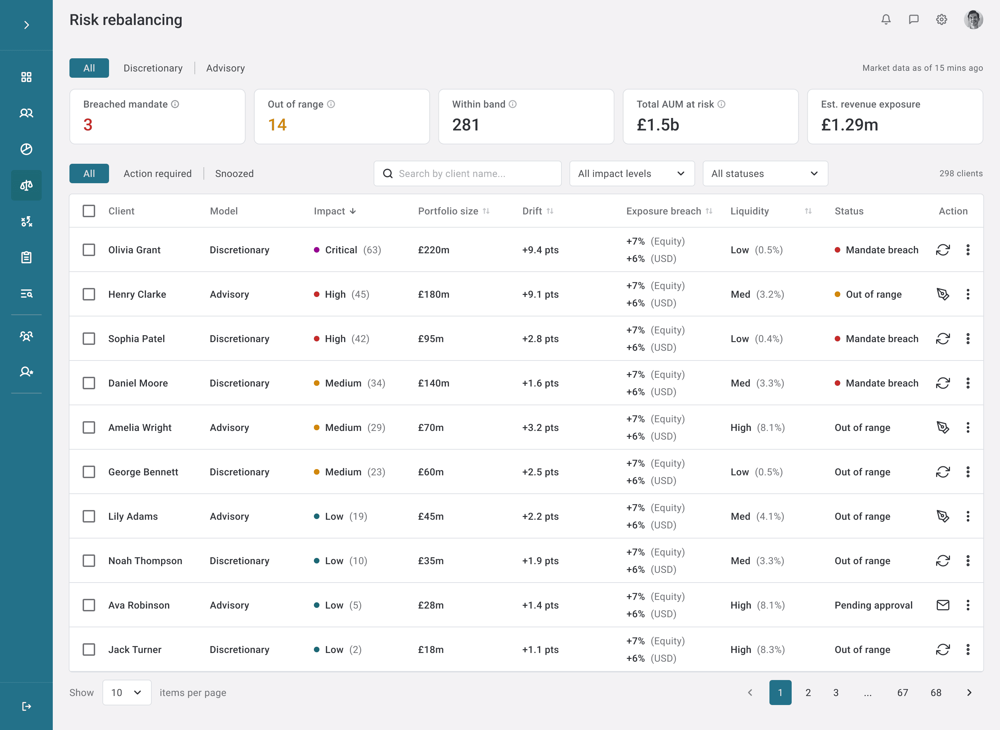
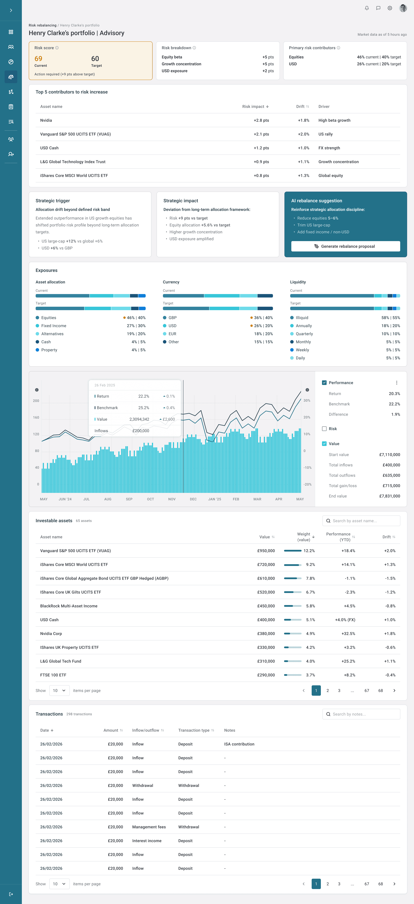
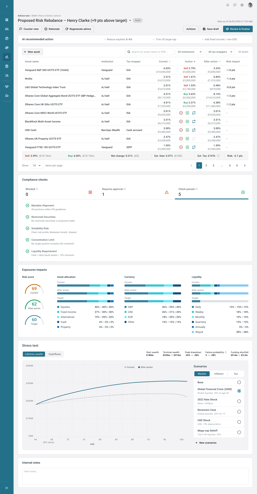
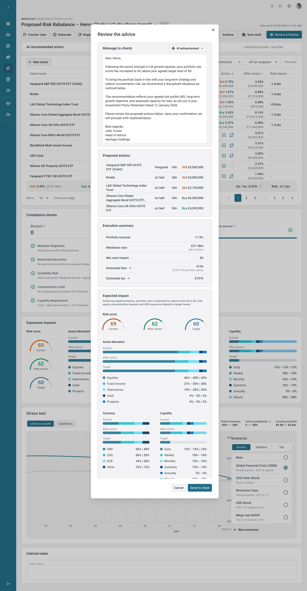
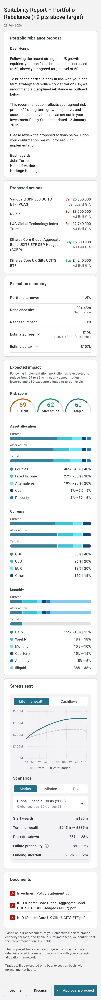
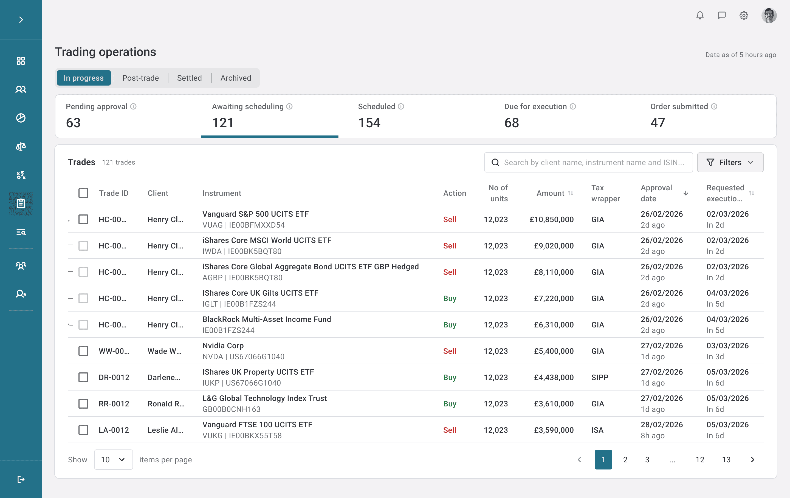

Informed by 7 years of building governed wealth management systems at Y TREE — where I led the design of portfolio rebalancing tools managing over £9b in client assets. This case study presents a portfolio rebalancing system for advisors managing UHNW clients, where every decision must be explainable, auditable, and mandate-aligned. Specific client data and proprietary product details have been abstracted.
This isn't a dashboard problem. It's a decision governance problem.
The company operates across three markets with a mix of advisory and discretionary mandates. When portfolios drift, advisors don't just need to see the data — they need to act on it, justify it, and prove it was the right call.
The real design challenge was building a system that supports structured decision-making under regulatory pressure, not one that simply visualises numbers.
Three roles. Three definitions of what "right" looks like.
Before designing any screen, I mapped the decision ecosystem. The key insight was that decision power, capital ownership, and execution risk sit in entirely different hands — which means the system needs to serve fundamentally different mental models simultaneously.
“When allocations shift, I need clarity — not just alerts. Every adjustment must reinforce the long-term strategy.”
Pain: Too much time in Excel. No shared tool for tax impact. Hard to justify selling winners.
“My wealth is a legacy. I need to understand how decisions today protect tomorrow."
Pain: 50-page PDFs that don't answer "Am I still safe?” Fear that rebalancing triggers unexpected tax.
Every action must remain mandate-aligned, auditable, and traceable. The system is both a safeguard and a bottleneck.
Why rebalancing — and not something else?
The full wealth management system spans onboarding, reporting, tax structuring, and more. I used a prioritisation matrix to identify the highest-leverage entry point.
Portfolio rebalancing scored highest across all three dimensions: financial impact, cross-team dependency, and regulatory sensitivity. It was also the workflow where the current process was most fragmented — advisors were managing drift detection and suitability reporting manually in Excel.

From drift to decision — an 8-step governed workflow
The architecture maps the full rebalancing journey: from automated drift detection through diagnosis, path planning, compliance validation, advisor review, simulation, client approval, and trade fulfilment. Each step has a defined owner, a clear decision gate, and an audit trail.

The risk rebalancing dashboard surfaces portfolio-level alerts with immediate context — mandate breach vs. out-of-range vs. within band, sorted by impact severity. Advisors can see £1.5b AUM at risk across 298 clients at a glance, and act on the highest-priority cases without any manual scanning.
Separating "Mandate breach" from "Out of range" wasn't just a labelling choice — it defines two different response protocols. Mandate breach requires immediate action; out of range requires monitoring. The visual hierarchy enforces this distinction.

Once a drift is flagged, the advisor needs more than a number. This screen breaks down the risk score into its structural drivers — equity beta, growth concentration, USD exposure — and surfaces the top five contributing assets with their specific drift and impact. The AI rebalance suggestion appears inline, alongside the strategic trigger and expected impact, so the advisor can move from diagnosis to action without switching context.
The risk breakdown and the AI suggestion are deliberately placed on the same screen. In the previous workflow, advisors had to cross-reference multiple tools to understand why a portfolio drifted and what to do about it. Collapsing diagnosis and recommendation into a single view reduces the time between detection and action — and makes the advisor's rationale easier to construct when they need to justify the decision to compliance or the client.

The advice tool generates AI-recommended buy/sell adjustments based on the All-Weather model. But advisors retain full discretion — they can amend individual positions, add a counter view, or regenerate the proposal entirely.
The AI suggestion is surfaced as a starting point, not a default. The "Counter view" and "Rationale" buttons are primary-level actions — not buried — because overriding the AI should feel supported, not like breaking the system.

Compliance checks run automatically as the advisor builds the proposal. Rather than a separate approval gate at the end, the system validates mandate alignment, restricted securities, suitability rules, concentration limits, and liquidity requirements inline.
Making compliance visible during construction — not just at submission — changes advisor behaviour. It turns compliance from a blocker into a guardrail.
Once the advisor finalises the proposal, the system generates a client-facing suitability report with AI-drafted rationale. The advisor reviews and edits before sending. The client receives a mobile-optimised view with proposed actions, stress test scenarios, and a clear Approve / Discuss / Decline decision.
The suitability report and the internal advice tool share the same data model. This eliminates the manual re-keying that was the biggest source of error and delay in the legacy process.


Once the client approves the rebalancing proposal, the system generates the corresponding trade orders and routes them into the trading operations queue. This screen gives the back-office team a real-time view of all in-progress trades across clients — with status tabs for pending approval, awaiting scheduling, scheduled, due for execution, and order submitted. Each trade row carries the full context needed for execution: instrument, ISIN, action, amount, tax wrapper, approval date, and requested execution window.
The status pipeline at the top isn't just a summary — it's the primary navigation affordance. Back-office operators work through trades sequentially by status, not by client. Surfacing the count at each stage lets them triage at a glance without opening individual records. This mirrors how trading desks actually operate: by queue priority, not by relationship.

The hardest part wasn't the UI — it was defining what "done" looks like
In a system this complex, the design work isn't finished when the screens look right. It's finished when every stakeholder knows exactly what they're responsible for, and the system supports that clarity without ambiguity.
The biggest challenge was designing for a workflow where an error doesn't just mean a bad experience — it means a regulatory breach, a financial loss, or a breakdown in client trust. That constraint made every decision more deliberate, and ultimately produced a more considered system.
Keep exploring